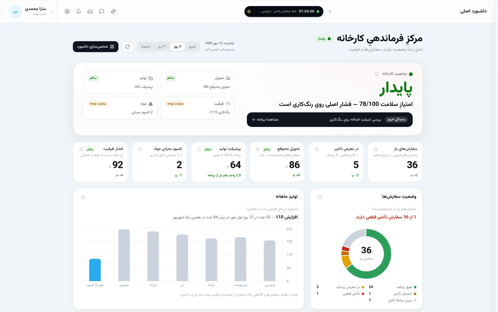
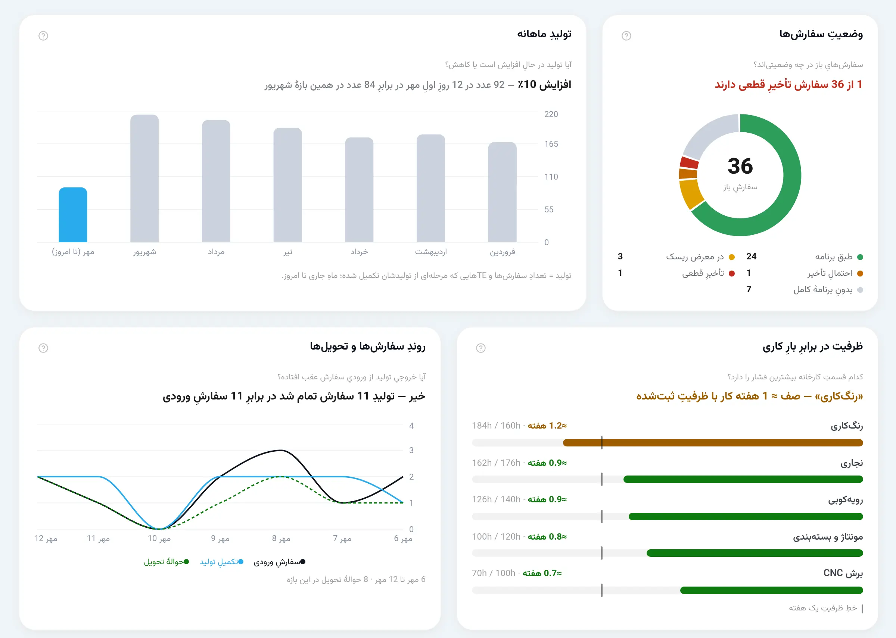
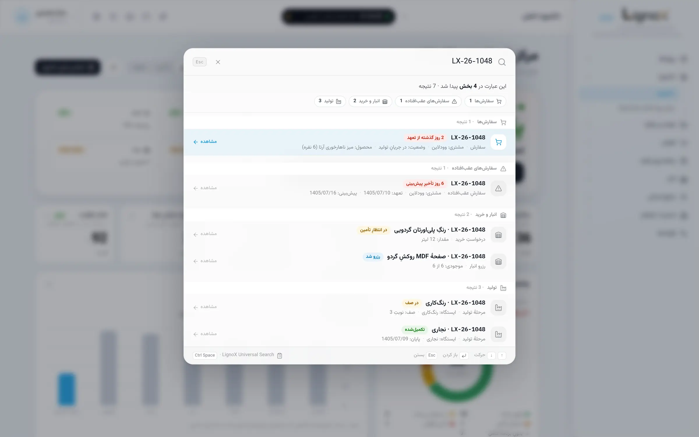
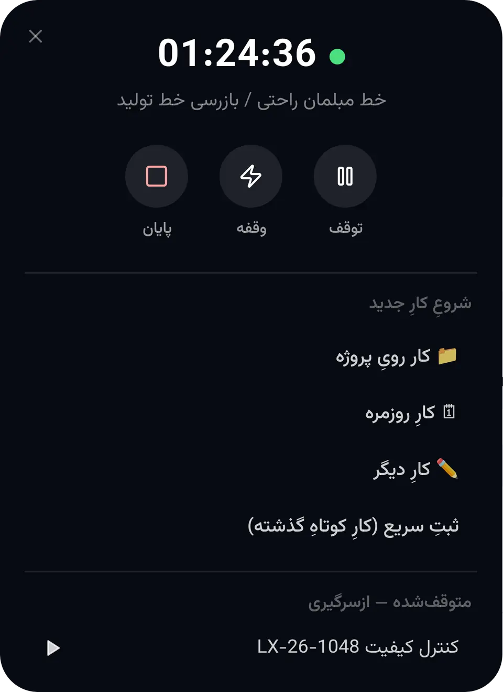

MANUFACTURING OPERATING SYSTEM
سیستمعامل تولیدبرای صنعت مبلمان
سفارش، برنامه، اجرا، مواد و تصمیم؛ در یک سیستم.

تصویر واقعی از نرمافزار LignoX · دادهها نمایشی هستند
وقتی کارخانه را ببینی،
میتوانی آن را مدیریت کنی.
LignoX برابر است با جریان، برنامه، دید و هوش مصنوعی
یک کارخانه، سه نگاه
01کارخانه را ببین.
تحویل، تولید، ظرفیت و مواد در یک نگاه؛ گلوگاه پیش از آنکه به تأخیر تبدیل شود.

02هر چیزی را پیدا کن.
یک کد بنویسید؛ سفارش، تولید و انبار در یک پنجره.
میانبر: Ctrl + SpaceCtrlSpace

03زمان واقعی کار را ببین.
کار پروژهای، کار روزمره و وقفهها، از نوار بالای LignoX ثبت میشوند.

قابلیتها
یک سیستم،
با چهار بُعد.
LignoX مجموعهای از نرمافزارهای جدا نیست؛ همه روی یک مدل مشترک از کارخانه ساخته شدهاند.
FLOW
اجرا
هر ایستگاه میداند الان چه کاری باید انجام دهد.
PLAN
برنامه
تاریخ تحویلی که از ظرفیت واقعی میآید.
VISION
دید
مدیریت، وضعیت واقعی کارخانه را میبیند.
AI
هوش مصنوعی
هوشی که داخل منطق کارخانه کار میکند.
فرایند تولید
مسیر یک سفارش در LignoX
- سفارشیک کد ردیابی یکتا
- برنامهریزیتحویل از روی ظرفیت واقعی
- موادکسری، پیش از ایستگاه
- تولیدمسیر هر محصول؛ برش تا بستهبندی
- ایستگاههاصف، شروع، توقف و پایان
- تحویلبرچسب QR و ورود به انبار
- تصمیمداشبورد و هشدارها
اطلاعات کارخانه، تبدیل به تصمیم میشود.
پیش و پس از LignoX
از ابزارهای جدا، به یک جریان واحد
BEFORE · قبل
- Excel
- کاغذ
- پیامها
- اطلاعات پراکنده
- تلفن
- حدس
AFTER · بعد
- دید
- برنامه
- اجرا
- داده
- تصمیم

داستان LignoX
LignoX از دل کارخانه آمده است، نه از یک ایده نرمافزاری.
- 01کارگاه
شروع با طراحی و ساخت مبلمان؛ کنار قطعه، دستگاه و سفارش.
- 02کارخانه
کنترل کیفیت، طراحی فرآیند، برنامهریزی تولید و مدیریت عملیات.
- 03مسئله
دلیل تأخیر یک سفارش، معمولاً جای دیگری از کارخانه بود.
- 04ایده
کارخانه، نه مجموعهای از ابزارها؛ یک سیستم بههمپیوسته.
- 05ساختن
ساختهشده با کمک ابزارهای توسعه مبتنی بر هوش مصنوعی.
«نرمافزار باید از منطق کارخانه پیروی کند، نه کارخانه از منطق نرمافزار.»
امنیت و استقرار
- اجرا روی سرور داخل شبکه کارخانه
- سطح دسترسی برای هر صفحه و هر نقش
- سابقه فعالیت برای عملیات مهم
پرسشهای متداول
پرسشهایی که پیش از دمو مطرح میشوند
LignoX سیستم مدیریت و کنترل تولید برای کارخانههای مبلمان است. سفارشها، مسیر تولید هر محصول، برنامهریزی ظرفیت و تاریخ تحویل (APS)، اجرای تولید در ایستگاهها (MES)، نیازمندی مواد و انبار، فرآیندهای سازمانی، داشبورد مدیریتی و دستیار هوش مصنوعی را در یک سیستم واحد به هم وصل میکند.
برای کارخانههای مبلمان با تولید سفارشمحور و چندمرحلهای؛ جایی که یک سفارش از برش، اسکلتسازی، رنگ، رویهکوبی و مونتاژ عبور میکند و هماهنگی میان این مراحل، ظرفیت ایستگاهها و تأمین مواد مسئله روزانه است.
ERPها معمولاً بر حسابداری، مالی و فرآیندهای عمومی سازمان تمرکز دارند. LignoX روی خود عملیات تولید تمرکز دارد: ظرفیت ایستگاهها، تاریخ تحویل محاسبهشده، صف و وضعیت هر کار در سالن، وابستگی مراحل، کمبود مواد و گلوگاهها. LignoX ماژول حسابداری یا مالی ندارد.
نه. برنامهریزی ظرفیت (APS) یکی از بخشهای LignoX است. اجرای تولید در ایستگاهها، مواد و انبار، برونسپاری، فرآیندها و فرمهای سازمانی، پروژهها، اعلانها و داشبورد مدیریتی هم در همان سیستم قرار دارند.
بله. هر ایستگاه صف کارهای خودش را میبیند؛ اپراتورها میتوانند از ترمینال لمسی یا با اسکن QR کار را شروع، متوقف (با ثبت دلیل توقف) و تمام کنند. کارهایی که منتظر مرحله قبل هستند قفل میمانند و مانیتورهای اختصاصی برای سالن تولید قابل تعریف است.
بله. نیازمندی مواد بر اساس BOM و مسیر تولید محاسبه میشود، کسریها مشخص میشوند و به لیست خرید اضافه میشوند، و انبار اسکلت و انبار محصول تکمیلشده، همراه با برچسب QR و حواله تحویل، در سیستم وجود دارند.
معماری LignoX برای اجرا روی سرور داخل شبکه کارخانه طراحی شده است. کاربران با مرورگر از رایانه، تبلت یا تلفن همراه به آن وصل میشوند و در صورت نیاز، دسترسی از بیرون کارخانه از طریق HTTPS پیکربندی میشود.
دادهها در پایگاه داده همان سروری نگهداری میشوند که LignoX روی آن اجرا میشود و مسیر ذخیره فایلها در تنظیمات قابل تعیین است. اگر دستیار هوش مصنوعی فعال شود، پرسشها و دادههای مرتبط با آن پرسش برای سرویس مدل زبانیِ انتخابشده ارسال میشوند.
بله. برای هر بخش از سیستم، دسترسی مشاهده، ایجاد، ویرایش و حذف جداگانه تعیین میشود و هر کاربر میتواند چند نقش داشته باشد. دستیار هوش مصنوعی هم در همین چارچوب دسترسی کار میکند.
بخش زیادی از LignoX بدون کدنویسی تنظیم میشود: ایستگاهها و مراحل تولید، مسیر تولید محصولات، فرآیندهای استاندارد، گروههای ظرفیتی و تقویم کاری، گردشکارهای سازمانی با طراح BPMN، فرمها، قالبهای چاپ و قواعد اعلان.
LignoX AI یک دستیار عملیاتی است که از ابزارهای خود سیستم استفاده میکند: سفارشها و صف تولید را بررسی میکند، گلوگاه را تحلیل میکند، کمبود مواد را نشان میدهد و اثر اضافهکاری یا تغییر ظرفیت را شبیهسازی میکند، بدون اینکه چیزی روی داده واقعی بنویسد. هر اقدام حساس، مثل تغییر اولویت یک سفارش، فقط بهصورت پیشنهاد ثبت میشود و به تأیید انسانی نیاز دارد. LignoX بدون فعالکردن AI هم بهطور کامل کار میکند.
بله. LignoX تحت وب است و با مرورگر روی تبلت و تلفن همراه هم باز میشود. ترمینالهای سالن تولید برای صفحه لمسی طراحی شدهاند، اسکن QR برای ثبت کار در دسترس است و اعلانها میتوانند بهصورت Web Push به دستگاه کاربر برسند.
بله. رابط کاربری LignoX از ابتدا فارسی و راستبهچپ طراحی شده و تاریخها با تقویم شمسی نمایش داده میشوند. خروجی Excel نیز در بخشهایی مانند برنامهریزی تولید در دسترس است.
بله. برای هماهنگی جلسه دمو تماس بگیرید؛ در جلسه، خود نرمافزار و جریان یک سفارش در آن را میبینید و درباره شرایط کارخانه خودتان گفتگو میکنید.
LignoX را با منطق کارخانه خودتان ببینید.
در یک جلسه دمو، مسیر یک سفارش را از ثبت تا داشبورد مدیریت میبینید.
یا تماس مستقیم: ۰۹۳۷ ۹۱۹ ۶۱۱۷